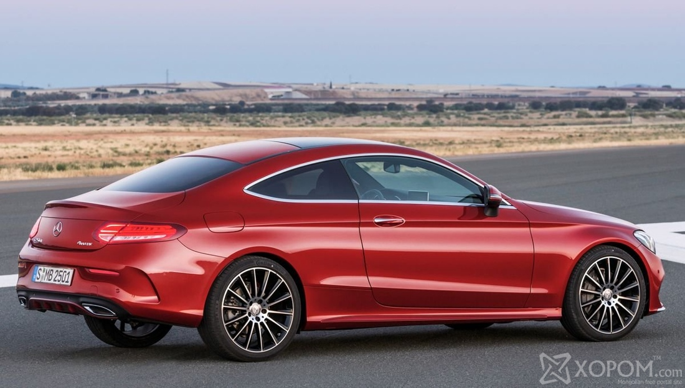
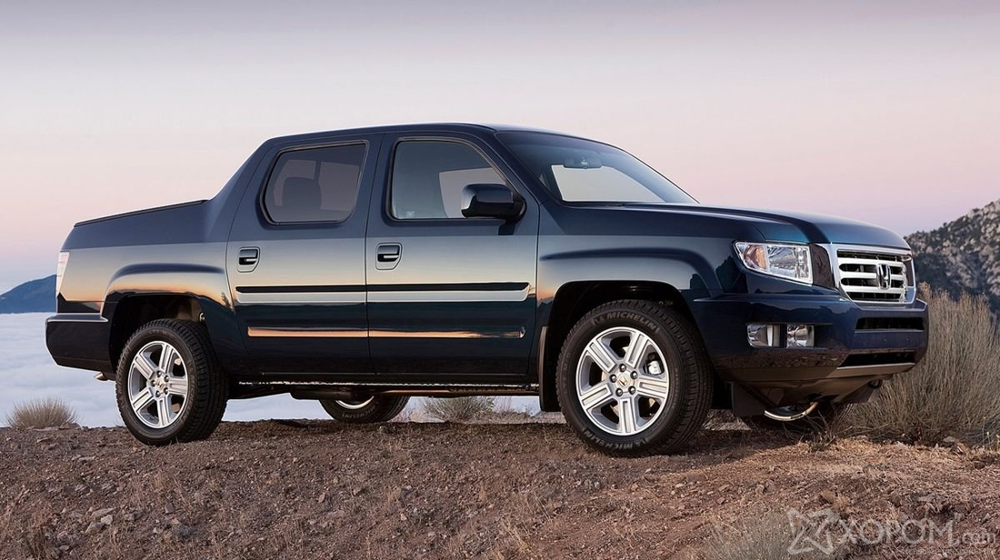
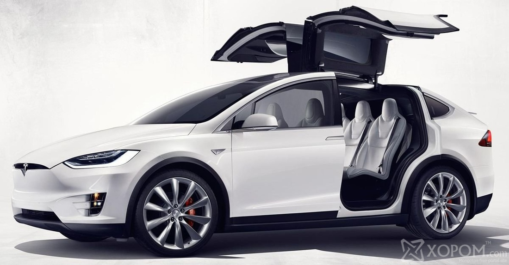

Бэлэн байгаа автомашинууд
Mercedes-Benz C-class Coupe Энэ машин хамгийн сүүлийн үеийн тоноглолтой байх болно гэж үйлдвэрлэгч амлаж байна. Үнийг нь хараахан зарлаагүй байгаа хэдий ч өөрийн ангиллын хувьд боломжийн үнэтэй байх ёстой.
Дэлгэрэнгүй мэдээллийг: news.xopom.com/119679/ © XopoM News

Mercedes-Benz C-class Coupe
| Үнэ |
100000000 |
Honda Ridgeline Хонда компанийн пикапын борлуулалт хэдэн жил муу байсан тул тэд пикапын зах зээлээс гарсан боловч 2016 онд Honda Ridgeline загвараар буцаж ирэхээр шийдсэн байна. Энэ машин дараа жил АНУ-аас эхлэн зарагдана гэхээс өөр мэдээлэл одоогоор алга байна.
Дэлгэрэнгүй мэдээллийг: news.xopom.com/119679/ © XopoM News

Honda Ridgeline
| Үнэ |
100000000 |
Tesla Model X Tesla компанийн хамгийн их хүлээлттэй байгаа машин бол анх удаа үйлдвэрлэж байгаа Tesla Model X цахилгаан машин нь өвөрмөц төрхтэйгээс гадна түүний бүх зүйлсийг сайтар бодож хийсэн гэнэ. Энэ машины цорын ганц дутагдал нь түүний үнэ юм.
Дэлгэрэнгүй мэдээллийг: news.xopom.com/119679/ © XopoM News

Tesla Model X Tesla
| Үнэ |
100000000 |